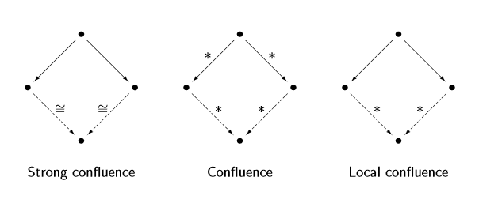

Critical Pairs' start graphs are the union of the left hand side of two rules.
The two rules are also not parallelly independent.
The intersection of the left hand side of the rules is a subgraph of the intermediate graph for the rule.
Critical Pairs are joinable if a graph 'U' can be reached from 'R1' and 'R2' using any of the rules.
Critical Pairs are STRONGLY joinable if graph 'U' contains the same nodes that have persisted via both journeys.
A Graph Transformation System (Graph + rules) terminates if the rules can only be applied a finite amount.
Proving termination requires explanation. eg. show that nodes are removes and so will run out.
A Graph Transformation System is non-terminating if the rules can be applied infinitely.
Proving requires one example of an infinte loop.
Confluence is where the graphs R1 and R2 gotten by any number of applications of the rules, can in turn get to the same graph U, from any number of applications of the rules.
Strong confluence is where one application of r1 and r2 leads to an isomorphic graph.

Is it terminating because it's possible for it to terminate, or is it non-terminating because it's possible for it to go on forever?
Eg:
r1 : {o} -> { }
r2 : {o} -> {o}
(r2 can be applied forever so non-terminating? Or r1 can be applied so terminating?)